R2 货运交换站
23 组。同一辆坦克、同一位置、同一朝向与俯仰。左图为改前，右图为改后。点击对比图可查看两张完整的 1024 × 576 游戏画面。
维修站信标
维修站 B turntable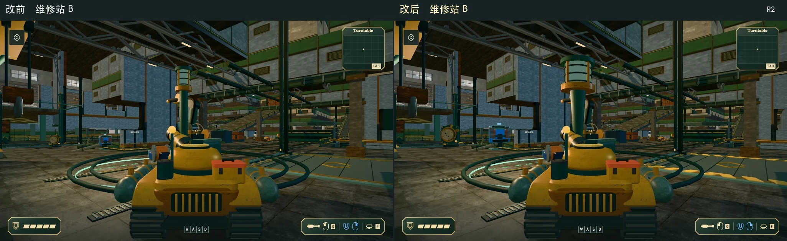
机关
西侧货轨磁力锁 rail-repair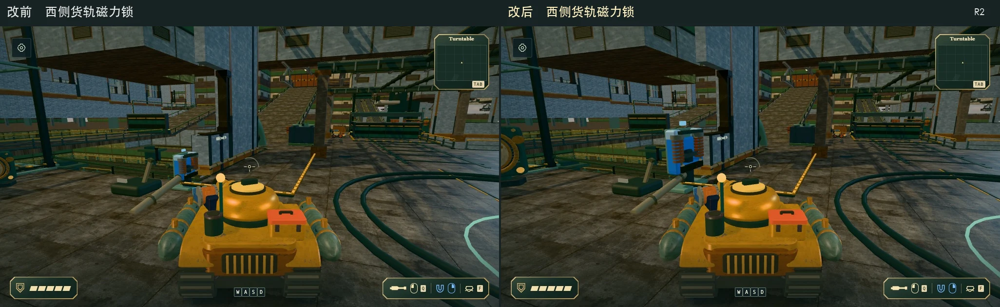
西侧配重台控制器 ballast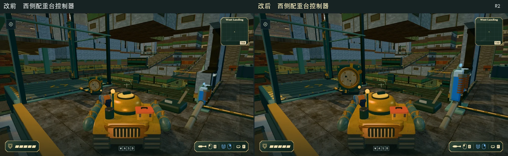
货运装载区高位承接盘 loading-return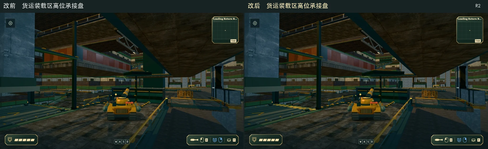
货场回程闸门按钮 freight-return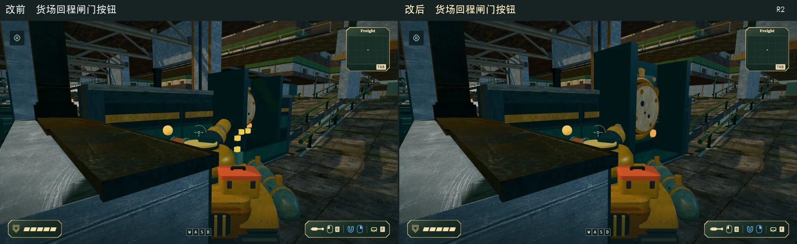
装备间回程磁锁 arsenal-return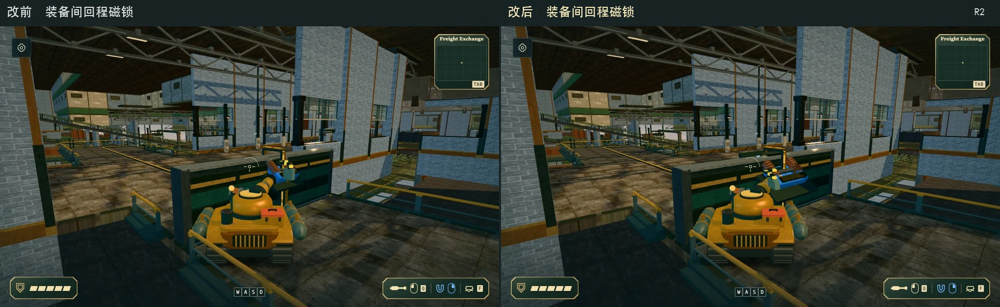
分拣车间捷径门闩 sorter-retry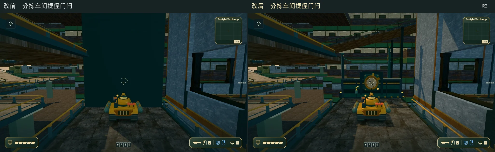
水道侧工坊门闩 workshop-water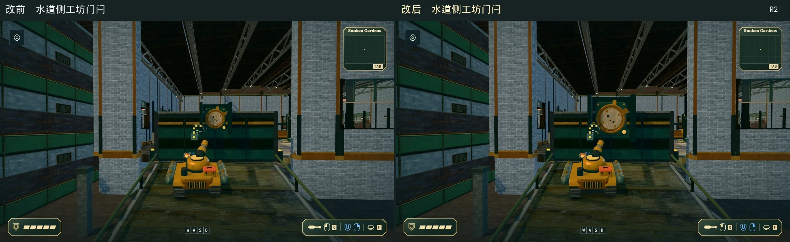
登车与停层标记
货场至试验场升降台 carrier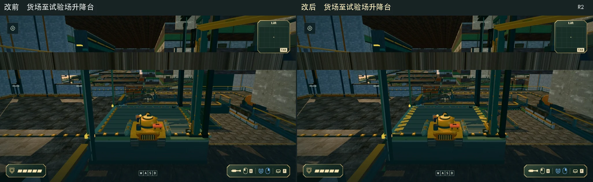
中央换乘升降笼 cage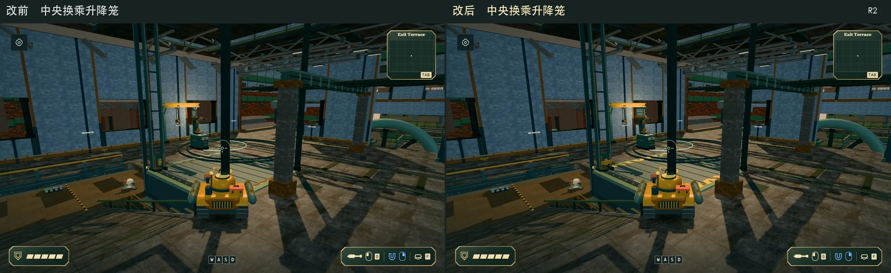
西侧训练升降台 training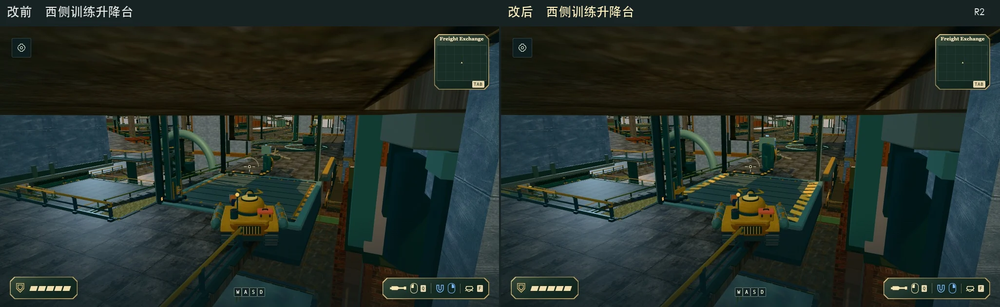
装载回程升降台 loading-return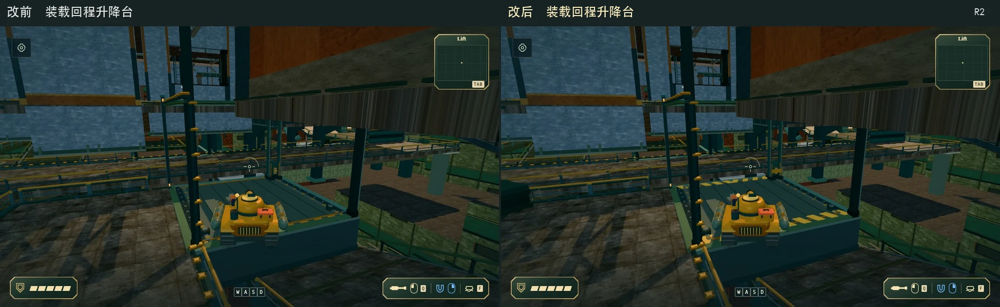
分拣线回程升降台 sorter-retry-lift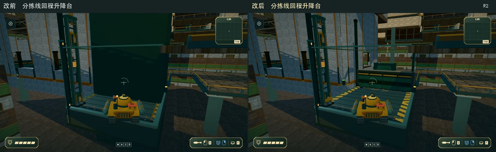
货轨检修移动桥 rail-inspection-bridge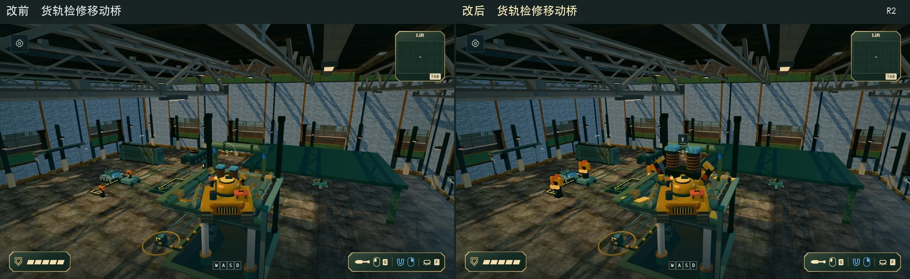
装卸线移动货台 freight-platform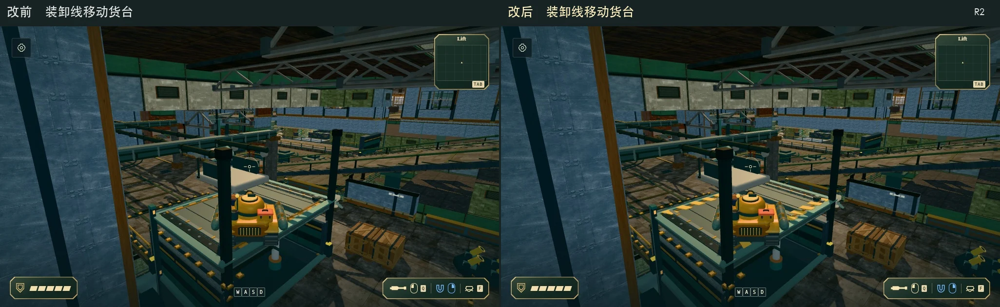
装备
主炮线圈装备台 cannon-coil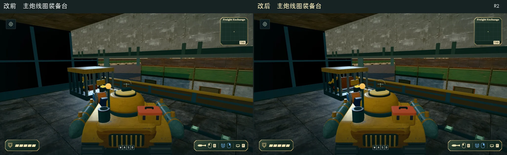
迫击炮安装台 mortarModule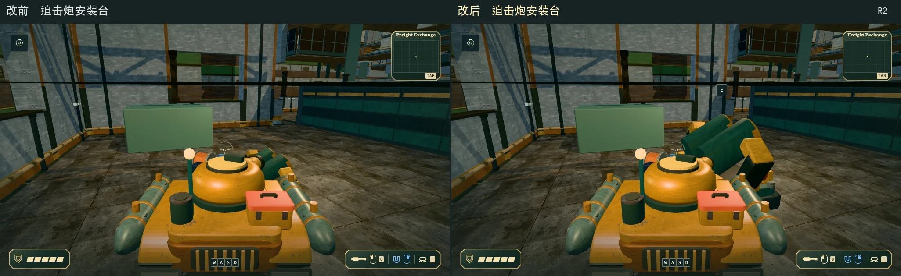
货轨桥上的磁力模块 magnetModule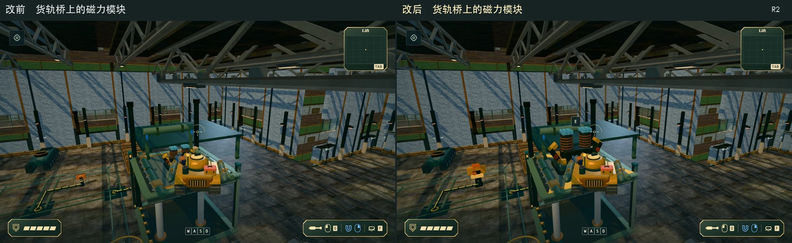
侧线机关
第一组货轨转辙器 rail-a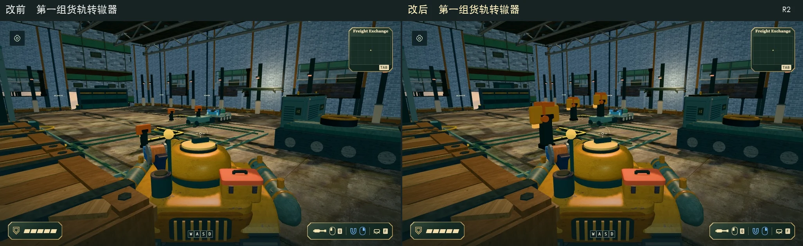
第二组货轨转辙器 rail-b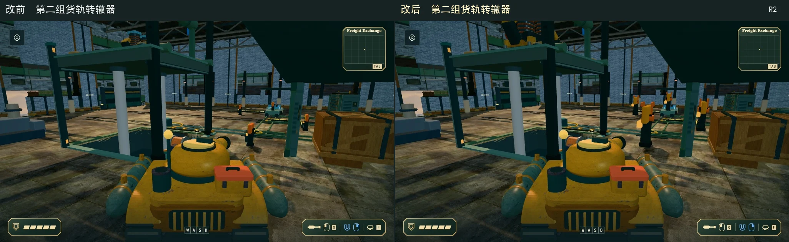
货轨换向信号机 rail-signal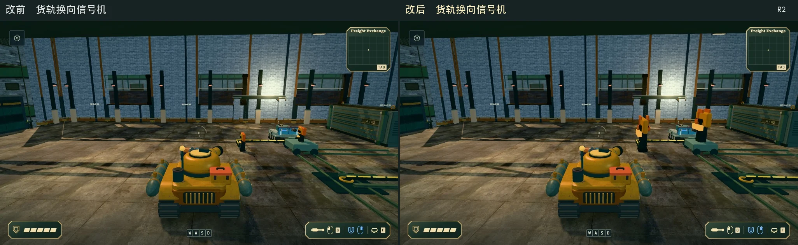
台车车载操作面板 rail-carrier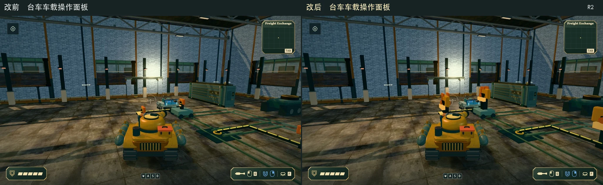
动态危险物
货运布雷车投放的地雷 freight-miner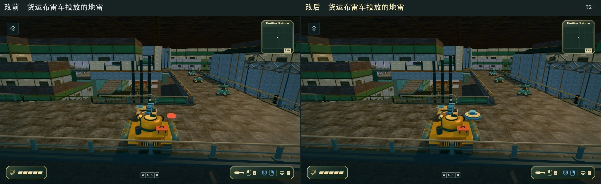